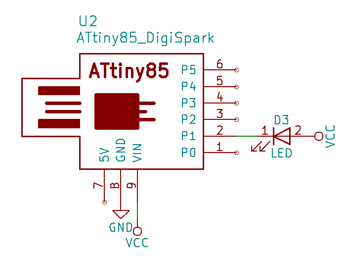
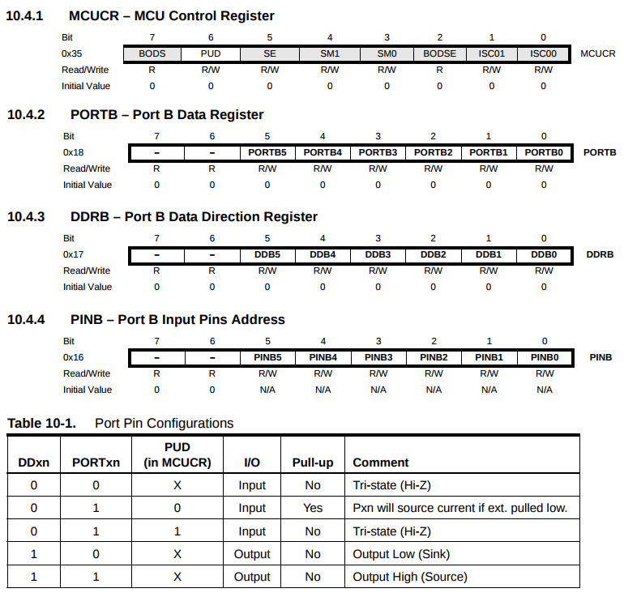
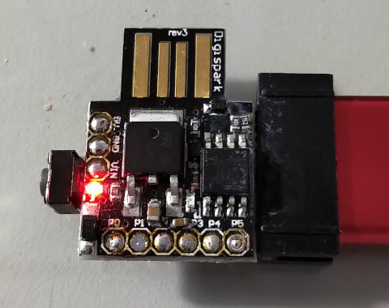
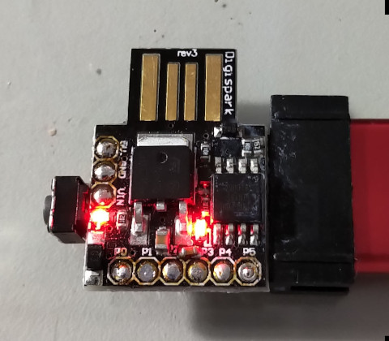

LED腳位


#include <avr/io.h>
#include <util/delay.h>
int main(void)
{
DDRB = 0x02;
while (1) {
PORTB = 0x00;
_delay_ms(10000);
PORTB = 0x02;
_delay_ms(10000);
}
return 0;
}
Makefile
all: avr-gcc -Wall -Os -DF_CPU=1000000 -mmcu=attiny85 -o main.o main.c avr-objcopy -j .text -j .data -O ihex main.o main.hex flash: avrdude -vv -c usbasp -p t85 -U flash:w:main.hex:i clean: rm -rf main.o main.hex
編譯和燒錄
$ make $ sudo make flash
完成

